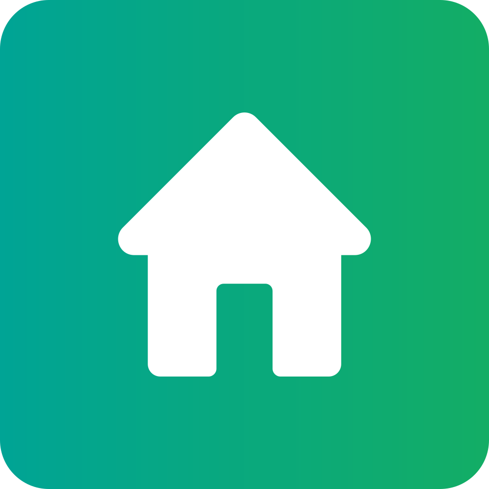

[틀: 호반그룹]
| 호반써밋 HOBAN SUMMIT | |
 | |
| 공개일 | 2019년 3월 (7주년) |
| 브랜드 성격 | 일반 브랜드 |
| 건축 유형 | 아파트 |
| 전신 | 호반베르디움 (2005년 5월 ~ 2008년 12월) 베르디움 (2009년 10월 ~ 2019년 2월) |
| 커뮤니티 명칭 | CLUB H |
| 사용사 | 호반건설 호반산업 |
| 링크 |  |
1. 개요
| 브랜드 홍보 영상 |
호반써밋(HOBAN SUMMIT)은 호반건설과 호반산업의 아파트 브랜드다.
2. 특징
 |  |
 |  |
호반써밋 리뉴얼 초기에는 호반써밋 광주같은 고급 단지에만 사용되어 써밋플레이스의 명맥을 어느 정도 이어왔지만, 2020년 2월 송도 오션파크 베르디움 입주를 기점으로 기존 베르디움 분양단지까지 써밋으로 간판갈이를 하는 등의 물량 위주의 브랜드 홍보를 이어가면서 써밋을 완전히 베르디움을 계승한 일반 브랜드 아파트로 바꾸었다.
2010년 호반써밋플레이스를 내놓고 2019년 호반써밋으로 개편한 뒤 7년만인 2026년 브랜드 리뉴얼을 통해 프리미엄 브랜드 호반써밋 에디션을 함께 선보였다.
3. BI/전용 색상
| 호반써밋 2019 BI (2019.03~2026.12) | 호반써밋 2026 BI (2026.12~) |
.svg) | |
| SUMMIT Black |
| SUMMIT Beige |
| SUMMIT Green |
4. 전신 브랜드
4.1. 호반리젠시빌
| 리젠시빌 BI (1998~2005) |
 |
호반은 창업 초반에 기업형 임대아파트를 주로 지었다, 리젠시빌 브랜드를 통해 ‘호텔식 임대아파트’로 포지셔닝하고 고품질의 임대아파트를 공급하면서 상당히 큰 호응을 얻었다.[2][3] 리젠시빌이 흥행한 덕에 광주의 작은 신생 건설사였던 호반이 기업규모와 인지도를 크게 끌어올릴 수 있었다.
여담으로 이때 호반과 협력하여 리젠시빌 아파트를 짓던 회사들이 나중에 독립하여 리젠시빌주택/리젠시빌건설과 골드클래스가 되었다.
4.2. 베르디움
.svg) |
 |  |
 |  |
베르디움(VERTIUM)은 호반건설과 호반산업이 사용했던 아파트 브랜드이다. 2020년까지 사용되었으며, 2021년부터는 사실상 지방의 민간임대주택 전용 브랜드로만 사용 중이다.
2005년 본사를 광주에서 서울로 이전함과 동시에 베르디움 브랜드를 런칭했고 기존에 사용하던 리젠시빌은 폐지되었다.
2009년 호반건설 창립 20주년을 맞아 브랜드 리뉴얼을 거쳤고, 이때부터 본격적으로 인지도를 쌓기 시작했다.
2019년 창립 30주년을 맞아 다시 한번 브랜드 리뉴얼을 거쳤으나, 동시에 호반써밋 브랜드가 런칭되었고 호반건설의 메인 브랜드로 자리 잡으면서 지방의 민간임대주택를 제외한[4] 대부분의 현장에서 사용되지 않고 있어, 메인 브랜드로서는 “사실상” 폐지되었다.
브랜드 홍보에 기여할 수 있는 위치에 있거나 인지도를 가진 곳에 한하여 기존 베르디움 브랜드를 사용하던 아파트들도 호반건설의 동의를 받은 후 하나둘씩 호반써밋으로 이름과 로고를 바꾸고 있다. 단, 하단에 서술된 효빈광역시와 덕빈 권역의 특수 사례는 제외한다.
| 초기 BI (2005.05~2008.12) | 호반 20주년 BI (2009.01~2019.02) | 호반 30주년 BI (2019.03~ ) |
.svg) | .svg) | |
| PANTONE 3725C |
| PANTONE 369C |
| PANTONE 7720C |
| PANTONE 137C |
| PANTONE 411C |
4.3. 써밋플레이스
| 써밋플레이스 초기 BI (2010.10~2016.04) | 2기 BI (2016.05~2019.02) |
 | .svg) |
5. 프리미엄 브랜드
5.1. 호반써밋 에디션
[틀: 대한민국의 프리미엄 아파트 브랜드] |
5.2. 위파크(WEPARK)
 |
6. 지역별 단지 현황
6.1. 효빈광역시 및 덕빈 권역
| 구/군 | 행정동(법정동) | 아파트명 | 시공사 | 세대수 | 입주연월 | 비고 |
|---|---|---|---|---|---|---|
| 북구 | 고송4동(고송동) | 고송호반베르디움 1차 | 호반건설 | 720세대 | 2015.05 | |
| 북구 | 고송4동(고송동) | 고송호반베르디움 2차 | 호반건설 | 640세대 | 2017.11 | 1차보다 역에서 조금 더 멀다 |
| 북구 | 소조동(소조동) | 소조 호반베르디움 | 호반건설 | 920세대 | 2014.02 | 소조동 시세 대장. 준신축급으로 가장 쌔끈한 인테리어를 자랑함 |
| 청엽구 | 동리동(동리동) | 효빈동신도시 호반베르디움 | 호반건설 | 1,480세대 | 2022.11 | 동리동 유일 입주 단지. 외딴섬 |
| 창전구 | 쌍엽1동(쌍엽동) | 쌍엽 호반베르디움 | 호반건설 | 950세대 | 2016.02 | 평면 설계가 깔끔해서 실거주 만족도가 높은 편 |
| 탄성군 | 탄성읍(탄성리) | 탄성호반베르디움 | 호반건설 | 1,100세대 | 2019.04 | 탄성리 중심가에 위치한 대단지. 이과생 거주 비율이 기형적으로 높다는 소문이 있다. |
| 탄성군 | 흑택면(흑택리) | 흑택호반베르디움 (10블럭) | 호반건설 | 850세대 | 2022.01 | 1지구 외곽의 쾌적한 숲세권 단지 |
| 탄성군 | 도변읍(요우리) | 요우 호반베르디움 | 호반건설 | 850세대 | 2017.05 | |
| 탄성군 | 고해읍(고해리) | 고해 호반베르디움(예정) | 호반건설 | 600세대 | 2030.05 (예정) | 고해리 외곽 산자락 부지에 들어설 예정인 숲세권 단지. |
7. 사건사고 및 여담 (효빈·덕빈 권역 한정)
7.1. 호반베르디움 써밋 개명 결렬 사태와 역프리미엄 미스터리
보통 타 지역에서는 하이엔드 브랜드인 '호반써밋(SUMMIT)'으로 도색과 문패를 교체하면 아파트 가치와 호가가 수천만 원씩 뛰는 것이 부동산계의 상식이지만, 효빈시와 덕빈 권역에서는 정반대의 기현상이 벌어지고 있다.
효빈시의 호반베르디움 단지들은 사실상 '엠마 베르데(Emma Verde)'의 네이밍 성지 프리미엄(...)이 든든하게 붙어 있어, 분양 당시부터 순전히 이름만 보고 들어온 진성 러브라이버 입주민들과 탄탄한 마니아층 수요 덕분에 매매가가 견고하게 방어·상승하고 있었다.
그런데 2019년 건설사 측에서 전국적인 브랜드 고급화 추세에 맞춰 '써밋'으로의 개명을 대대적으로 추진하자, 입주민들 사이에서는 "하이엔드고 뭐고 '베르데'가 빠지면 그게 무슨 소용이냐", "써밋으로 바꾸는 순간 성지 프리미엄이 증발해서 오히려 집값이 폭락(떡락)한다!"라는 현실적이면서도 절박한 위기감이 번진 것(...). 과거 남구의 평당 우미린이 '파크빌'에서 '우미린'으로 간판을 바꿔 달고 집값이 폭등했던 기적적인 성공 사례와는 완벽하게 대조되는 상황이었다.
실제로 덕빈 권역의 타 지자체에서 무리하게 써밋으로 간판갈이를 시도했다가 피를 본 '역프리미엄 참사'가 연달아 터지며 이들의 공포는 현실이 되었다.
- 덕빈북도 빈주시 동신동: 빈주시청 소재지인 동신동의 '동신 베르디움'이 '동신 호반써밋'으로 개명했다가 집값이 오히려 소폭 하락해버리는(...) 대참사를 겪었다. 결국 놀란 입주자대표회의가 긴급 회의를 열어 명칭을 다시 '동신 베르디움'으로 원상복구하는 촌극을 벌였고, 뼈아픈 도색 및 간판 교체 비용만 날린 끝에 겨우 집값이 원상 복구되었다.
- 매성시: 매성시의 '근암 호반베르디움' 역시 '근암 호반써밋'으로 야심 차게 간판을 바꿔 달았으나 마찬가지로 집값이 하락했다(...). 게다가 이쪽은 명칭을 다시 복원하려 했으나 도색과 간판 교체에 들어가는 비용이 너무 막대해 입주민들이 포기했고, 결국 내려간 집값 그대로 눈물을 머금고 살고 있다고 한다.
- 마진시: 마진시에서도 2023년 '마진 베르디움'을 '마진 호반써밋'으로 변경했으나, 아파트 값이 올라가기는커녕 약간 내려가버리는 불상사가 발생했다.
이러한 덕빈 권역의 연쇄적인 '써밋의 저주(...)' 사례들을 실시간으로 목격한 효빈광역시와 덕빈 권역의 남은 베르디움 입주민들은 "앞으로 절대로 바꿀 가능성이 없다"며 베르디움 간판을 결사 사수하게 되었다.
결국 단순한 팬심을 넘어 '내 집값 수호'라는 지극히 현실적인 경제적 이해관계까지 겹치면서 입주민들의 격렬한 결사반대가 이어졌고, 호반건설 측도 두 손 두 발 다 들고 효빈시 및 덕빈 권역 한정으로 '베르디움' 브랜드를 영구 유지하기로 결정했다.
이 사건 이후 호반건설은 2019년 2월부터 자사 아파트 브랜드를 호반써밋으로 대거 전환했음에도 불구하고, 이 일대에 지어지는 단지들만큼은 예외를 두기로 선언했다. 그 결과 2019년 4월 입주한 탄성호반베르디움, 2022년 1월 입주한 흑택호반베르디움, 2022년 11월 입주한 효빈동신도시 호반베르디움은 물론, 2030년에 지어질 예정인 고해 호반베르디움까지 써밋이 아닌 '베르디움'이라는 이름을 달고 나오는 것으로 일단락되었다.
타지 부동산 전문가들조차 "하이엔드 브랜드를 공짜로 달아주겠다는데 브랜드 가치 하락과 집값 폭락을 우려해 걷어찬 곳은 대한민국 부동산 역사상 효빈·덕빈 지역이 유일무이할 것"이라며 혀를 내둘렀다는 후문이 전해진다. 이것이 바로 서브컬처 주도형 부동산 경제학 호반건설: 써밋이 베르데보다 못하다는 거냐...?
7.2. 기타 재미있는 일화들
- 엠마 베르데 생일(2월 5일)의 스위스풍 조경 대소동: 매년 2월 5일 엠마 베르데의 생일이 되면, 효빈시 관내 호반베르디움 단지들의 입주자대표회의가 주도하여 아파트 단지 내 조경수와 산책로를 스위스 알프스풍으로 꾸며놓는 기행을 벌인다. 심지어 스피커에서는 요들송이 흘러나오며, 이 날만큼은 관리사무소 직원들도 알프스 전통 모자를 쓰고 순찰을 돈다고 한다.
- 요우 호반베르디움의 '전속전진 요우소로' 아침 방송: 탄성군 도변읍 요우리에 위치한 '요우 호반베르디움'에서는 매일 아침 관리사무소의 안내 방송 시작 멘트가 "입주민 여러분, 오늘도 전속전진 요우소로!"로 고정되어 있다. 처음엔 외부인들이 듣고 당황했으나, 이제는 이 멘트가 안 나오면 관리사무소에 항의 전화가 빗발친다고.
- 소조 호반베르디움 츙츙(코토리) 조류 출몰 대소동: 북구 소조동(小鳥洞)에 위치한 소조 호반베르디움은 이름에 걸맞게 단지 내에 엄청난 수의 새들이 서식한다. 보통의 아파트라면 새똥 문제로 쫓아내기 바쁘지만, 입주민들은 이 새들을 '츙츙'이라고 부르며 극진히 대접하는 바람에 단지가 거대한 생태 조류 공원이 되어버렸다.
- 탄성호반베르디움 이과생 단지화 및 공대생 24시 스터디: 탄성리 중심가에 위치한 탄성호반베르디움은 이상하게도 이과생과 공대생 거주 비율이 기형적으로 높다. 이 때문에 단지 내 커뮤니티 센터(CLUB H) 독서실은 사실상 24시간 해커톤 랩실처럼 운영되며, 칠판에는 항상 알 수 없는 미적분 공식과 회로도가 빼곡하게 적혀 있다.
- 흑택호반베르디움의 깐깐한 입주자대표회의: 쿠로사와 다이아의 성지인 탄성군 흑택면에 위치한 흑택호반베르디움 10블럭은 입주자대표회의의 규정 적용이 군대 뺨치게 엄격하기로 소문났다. 분리수거 규정을 조금이라도 어기면 어디선가 "뿟부- 데스와!"라는 환청과 함께 동대표가 나타나 매의 눈으로 지적을 한다고 한다.
- 효빈동신도시 호반베르디움 고립 생존기: 청엽구 동리동 효빈동신도시에 2022년 홀로 입주한 호반베르디움은 1,480세대의 대단지임에도 불구하고 주변이 휑한 '외딴섬' 신세였다. 이에 입주민들은 마치 포스트 아포칼립스 생존자들처럼 커뮤니티 센터에서 텃밭 채소와 생필품을 물물교환하는 독자적인 '동리동 생존 경제 체제'를 구축해 인근 단지 입주 전까지 버텨냈다는 눈물겨운 전설이 있다.
각주
- [1] 한때 호반건설이 인수를 시도했던 대우건설의 하이엔드 브랜드인 써밋(푸르지오 써밋)과 겹치는 부분이 많아 표절 의혹이 생겼고, 대우건설 측에서도 불편한 기색을 보이기도 했다.(업계에서는 인수를 염두에 둔 작명이란 소문도 돌았다.) 하지만, 'Summit'이란 단어는 일반 명사라 그 자체로는 상표권을 주장할 수가 없고, 오히려 전신 브랜드인 '써밋플레이스'까지 고려하면 호반건설이 대우건설보다 한참 앞서 '써밋'이란 단어를 사용했기 때문에 두 회사 모두 조용히 넘어갔다. ↑
- [2] 주로 30평대 크기의 중형 아파트를 공급하여 저렴한 집을 찾는 서민층보단 자녀를 둔 3~4인가구를 타깃으로 했으며 타 회사보다 실내를 월등하게 넓게 지어서 인기가 매우 좋았다고 한다. ↑
- [3] 이 당시에 민간임대아파트는 공급이 많지 않았고 품질도 주공아파트 수준이거나 오히려 더 떨어지는 경우도 많았다. 그나마 근래에 뉴스테이 정책 등 정부가 기업형 임대주택 공급을 권장하면서 많은 건설사들이 임대아파트도 품질을 올리기 시작했지만 호반건설은 이보다 한참 앞섰다는 점을 주목해야 한다. ↑
- [4] 수도권의 민간임대주택은 호반써밋을 사용한다. ↑
- [5] 프랑스어로 초록색을 뜻하며 발음은 베ㅎ에 가깝다. ↑
- [6] 호반써밋으로 개편된 이후로는 아파트, 오피스텔, 주상복합을 구분하지 않고 모두 호반써밋을 적용시키면서 브랜드가 통합되었다. ↑